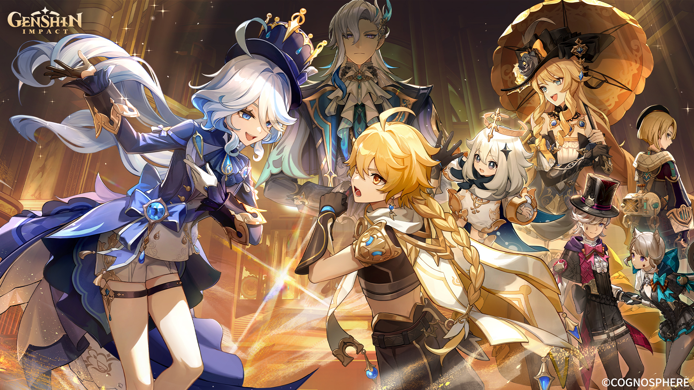
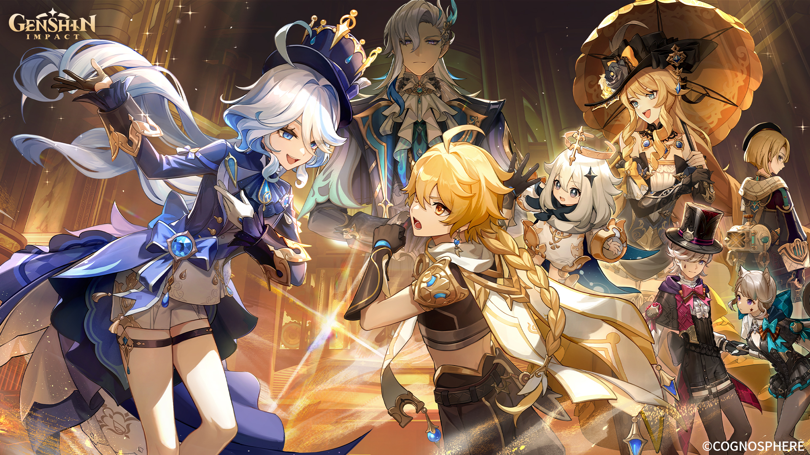
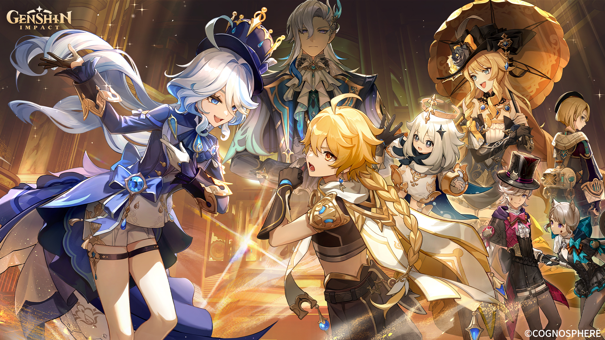
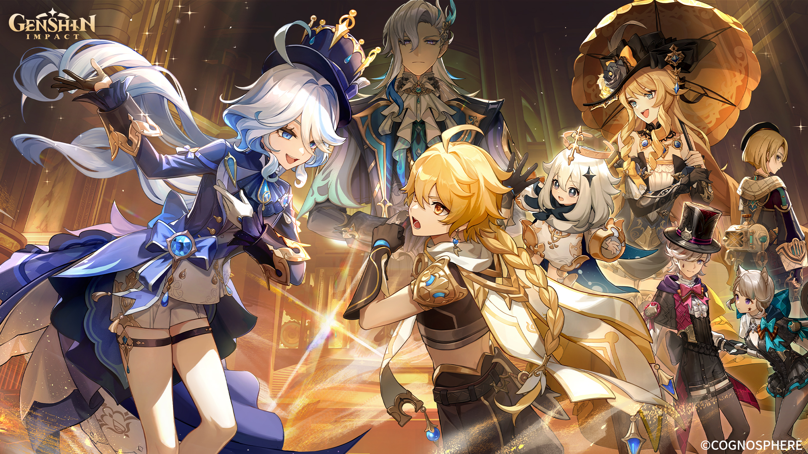

Pyro merupakan elemen api. Pyro memiliki daya rusak yang sangat tinggi saat pertempuran. Karakter dengan elemen ini memiliki kemampuan untuk menghasilkan dan mengendalikan api dalam pertempuran.
Anemo atau angin merupakan elemen pertama yang akan dikenal oleh para pemain Genshin Impact. Elemen ini dikuasai oleh Barbatos alias Venti yang merupakan Archon di Mondstadt. karakter Anemo antara lain adalah Jean, Sucrose, Xiao, dan Kazuha. Karakter dengan elemen Anemo juga dapat menyelesaikan teka-teki dan juga mengumpulkan sumber daya.
Hydro adalah elemen air. Karakter Hydro memiliki kemampuan untuk menghasilkan kekuatan air dari senjata mereka. Beberapa karakter Hydro dalam Genshin Impact termasuk Barbara, Mona, Tartaglia (Childe), Xingqiu, dan lainnya.
Elemen yang dikuasai oleh Raiden Shogun sebagai Archon dari Inazuma ini merupakan elemen listrik yang bisa menghasilkan damage yang sangat besar pada pertempuran. Selain Raiden Shogun, karakter Electro lainnya adalah Beidou, Fischl, Razor, dan Sara.
Dendro merupakan elemen dengan kekuatan alam. Elemen ini dikuasai oleh Nahida yang merupakan Archon dari Sumeru. Dendro bisa dibilang menjadi elemen yang cukup unik dalam Genshin Impact. karakter dengan elemen Dendro adalah Alhaitam, Baizu, Nahida, Tighnari, dan Kaveh.
Geo merupakan elemen tanah yang ada di Genshin Impact. Penguasa elemen ini adalah Morax atau yang lebih dikenal sebagai Zhongli, seorang Archon di Liyue. Elemen Geo memiliki kekuatan untuk menciptakan penghalang, menarik lawan, dan menjatuhkan musuh. Elemen ini juga dapat digunakan oleh beberapa karakter untuk memulihkan stamina.
Cryo merupakan elemen es. Karakter dengan elemen ini memiliki kekuatan untuk membekukan musuh dan sejumlah kemampuan lainnya. Penguasa atau Archon Cryo adalah Tsaritsa dari Snezhnaya. Karakter yang termasuk memiliki elemen Cryo adalah Ganyu, Eula, Ayaka, Diona, dan lainnya.
Delusion adalah objek yang dibuat oleh Fatui untuk mendapatkan kekuatan elemental, sehingga objek ini murni buatan manusia. Pengetahuan tentang Delusion sebenarnya masih sangat langka, misterius, dan merupakan rahasia yang dijaga ketat bahkan di kalangan Fatui yang belum dibahas secara di game.